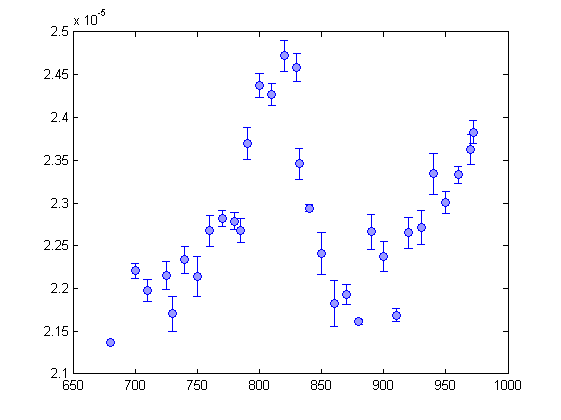
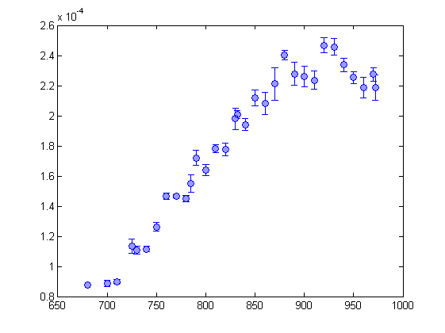
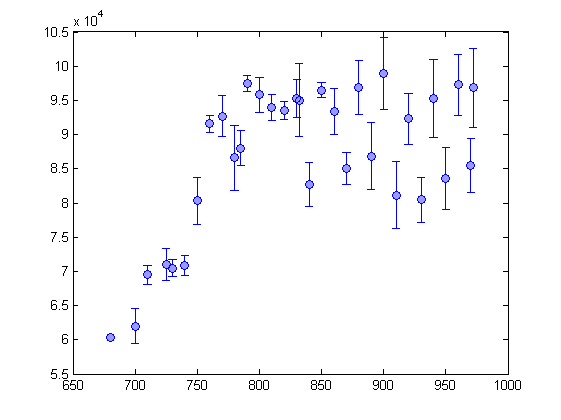

directory = 'C:\Data\140815_transversewidth_500usTOF_Isat2000_alpha0.2\';
date = '140815';
camera = 'sidecam';
varstring = 'magnetic field';
pixelLength = 2.84e-6;
massL6 = 9.988e-27;
hbar = 1.05457e-34;
Isat = 135*10;
kB = 1.38e-23;
imgArrayFresh = []; lowIntRealAtomImg = [];
OD = 0;
close all;
raw = 1;
logfilename = [directory date '_log_camera.txt'];
fid = fopen(logfilename,'rt');
C = textscan(fid, '%s', 'Delimiter','\t');
C = C{1};
fclose(fid);
varData = [];
TotalImages = 0;
for i=1:(length(C)-1)
curr = C{i};
next = C{i+1};
if strcmp(curr,'MeasNr')
TotalImages = TotalImages + 1;
end
end
[fileLocList,varData] = generateFromLogfile(directory,date,varstring,camera);
imageArray = [];
for i=1:length(fileLocList)
imageArray(:,:,i) = PullFTS(fileLocList{i},raw);
end
imageArrayC = []; imageArrayTC = [];
ROIx = 490:690;
ROIy = 525:650;
TightROIx = 510:670;
TightROIy = 575:595;
imageArrayC = imageArray(ROIy,ROIx,:);
imageArrayTC = imageArray(TightROIy,TightROIx,:);
if(0)
for i=1:length(imageArrayC(1,1,:))
if(mod(i,5) == 0)
figure(i);
imagesc(imageArrayC(:,:,i));
end
end
end
fg = @(p,x)(p(1).*exp((-1).*((x-p(2)).^2) ./ (2.*p(3).^2)) + p(4));
gcoefsX = []; gcoefsY = []; centers = [];
for i=1:length(imageArrayC(1,1,:))
gcoefsX(:,i) = gausFit1D(mean(imageArrayC(:,:,i),1));
gcoefsY(:,i) = gausFit1D(mean(imageArrayC(:,:,i),2));
centers(:,i) = [ceil(gcoefsX(2,i)), ceil(gcoefsY(2,i))];
sigmaX(:,i) = gcoefsX(3,i);
sigmaY(:,i) = gcoefsY(3,i);
end
xvector = 1:length(ROIx);
COMx = [];
for i=1:length(imageArrayTC(1,1,:))
end
pixelCounts = [];
for i=1:length(imageArrayTC(1,1,:))
pixelCounts(i) = sum(sum(imageArrayTC(:,:,i)));
end
[sortedVarData,indexs] = sort(varData);
for i=1:length(sigmaX)
sigmaXSort(i) = sigmaX(indexs(i));
sigmaYSort(i) = sigmaY(indexs(i));
pixelCountsSort(i) = pixelCounts(indexs(i));
end
j=1; runTotal = 0; magFields = []; widthsX = []; widthsY = [];
stdDevWidthsX = []; stdDevWidthsY = []; pixelNumbers = [];
pixelNumbersStdDev = [];
for i=1:length(sortedVarData)
curr = sortedVarData(i,1);
if( curr == prev )
runTotal = runTotal+1;
else
widthsX(j) = mean(sigmaXSort(i-runTotal:i));
stdDevWidthsX(j) = std(sigmaXSort(i-runTotal:i));
widthsY(j) = mean(sigmaYSort(i-runTotal:i));
stdDevWidthsY(j) = std(sigmaYSort(i-runTotal:i));
magFields(j) = sortedVarData(i);
pixelNumbers(j) = mean(pixelCountsSort(i-runTotal:i));
pixelNumbersStdDev(j) = std(pixelCountsSort(i-runTotal:i));
runTotal = 0;
j = j+1;
end
prev = curr;
end
widthsX = widthsX.*pixelLength.*2;
widthsY = widthsY.*pixelLength.*2;
stdDevWidthsY = stdDevWidthsY.*pixelLength;
stdDevWidthsX = stdDevWidthsX.*pixelLength;
figure(1);
errorbar(magFields,widthsY,stdDevWidthsY/2,'MarkerFaceColor',[0.600000023841858 0.600000023841858 1],...
'Marker','o',...
'LineStyle','none',...
'Color',[0 0 1]);
figure(2);
errorbar(magFields,widthsX,stdDevWidthsX/2,'MarkerFaceColor',[0.600000023841858 0.600000023841858 1],...
'Marker','o',...
'LineStyle','none',...
'Color',[0 0 1]);
figure(3);
errorbar(magFields,pixelNumbers,pixelNumbersStdDev/2,'MarkerFaceColor',[0.600000023841858 0.600000023841858 1],...
'Marker','o',...
'LineStyle','none',...
'Color',[0 0 1]);
Reading in log file...
  